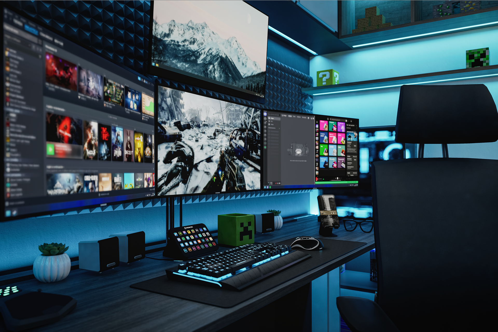
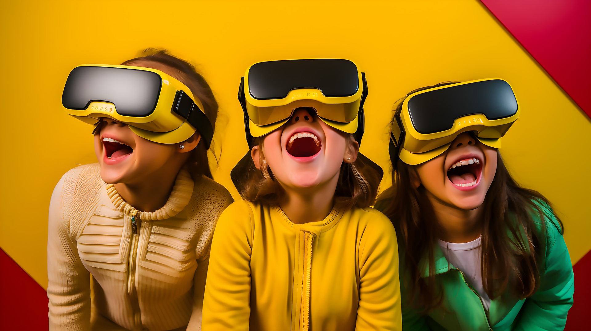
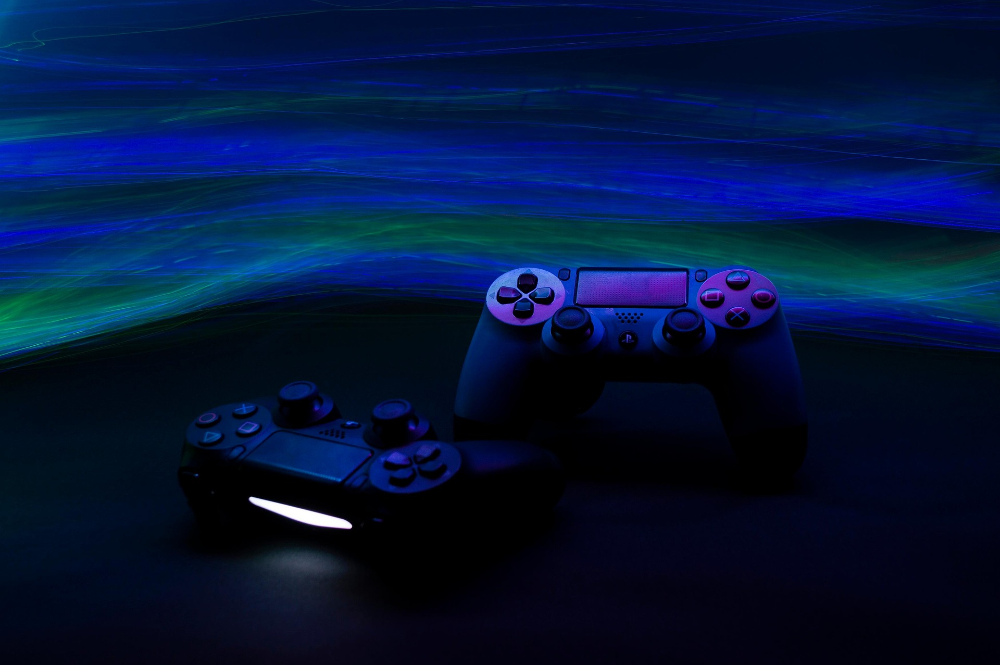
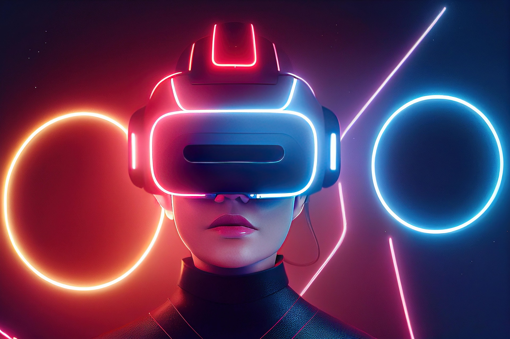

Nos évènements
Nous avons eu l'occasion de créer quelques rassemblements





L'esport, aussi orthographié e-sport ou esport (pour electronic sports, orthographié esports) et parfois traduit par sport électronique, désigne la pratique sur internet ou en LAN party d'un jeu vidéo seul ou en équipe, par le biais d'un ordinateur ou d'une console de jeux vidéo.
L'essor du sport électronique commence à la fin des années 1980 avec les premiers jeux en réseau multijoueurs, à partir des années 1990, sur internet. Au cours des années 2000, l'esport acquiert de plus en plus de notoriété,et des tournois dotés de prix conséquents commencent à émerger sur la scène internationale.
Les meilleurs acteurs mondiaux du sport électronique se rencontrent lors de tournois officiels, organisés par exemple par l'eSports World Convention (ESWC), la Major League Gaming (MLG), la Cyberathlete Professional League (CPL) ou encore l'Evolution Championship Series (EVO), pour ne citer que quelques organisations.
Le sport électronique à haut niveau est souvent financé par les sponsors et par les revenus générés par la
diffusion
en streaming qui incluent souvent de la publicité.




L'expression « réalité virtuelle » (ou multimédia immersif ou réalité simulée par ordinateur) renvoie typiquement à une technologie informatique qui simule la présence physique d'un utilisateur dans un environnement artificiellement généré par des logiciels.
Le retrogaming, parfois francisé en rétrogaming, est l'activité qui consiste à jouer à des jeux vidéo anciens ou à les collectionner. Il concerne les jeux sortis sur les consoles de jeu, les micro-ordinateurs, les bornes d'arcades ou les jeux dits « électroniques
La console de jeux ou un jeu peut être considéré com un objet de collection des années après la fin de sa commercialisation en raison de sa longévité, de sa particularité et/ou de sa signification culturelle. La plupart des collectionneurs restreignent leur recherche à des jeux avec des caractéristiques spécifiques. Ils peuvent rechercher les jeux d'une certaine console,d'un certain genre ou avec un certain personnage.